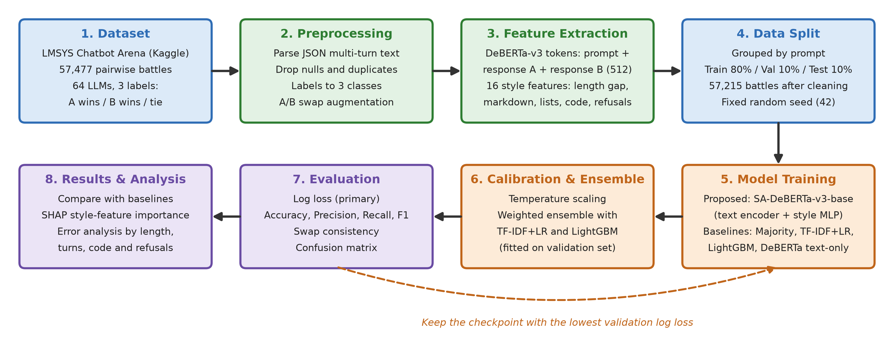

Which chatbot answer will people prefer?
SA-DeBERTa: a style-aware transformer that predicts human preferences between chatbot responses on 57,215 Chatbot Arena battles.
Research paper · Advanced HCI
Question
Given a prompt and two chatbot answers, which one will a real user prefer, or is it a tie?
Data
57,215 head-to-head battles between 64 LLMs (LMSYS Chatbot Arena)
Model
DeBERTa-v3 cross-encoder fused with 16 interpretable style features
Stack
PyTorch · Hugging Face · LightGBM · SHAP · scikit-learn
Authors
Huzeifa Asif, Kashif Bacha
48.4% test accuracy, calibrated ensemble (3 classes, chance = 33%)
64.4% accuracy on battles with a clear winner
+3.7 pts gained by adding style features, same encoder and same 1-epoch budget
57,215 battles after cleaning, 64 different LLMs
The problem
Millions of people now talk to LLM chatbots, but it is still hard to say which of two answers a person will prefer, and why. Human ratings are expensive, LLM-as-a-judge setups are known to favour longer or first-shown answers, and older user-satisfaction models were built for task-oriented dialogue, not open-ended answers.
The Chatbot Arena offers a rare source of real preferences: a user writes a prompt, two anonymous models answer, and the user votes for A, B or a tie. This project turns 57,477 of those votes into a three-class prediction problem and asks a second, HCI question along the way: how much does the presentation of an answer (its length, formatting, refusals) drive what people choose?
Approach

Data preparation. JSON turns were parsed into text, 187 incomplete battles and 75 duplicates were removed, and the data was split 80/10/10 grouped by prompt, so a popular prompt can never appear in both training and test.
SA-DeBERTa, the proposed model. A DeBERTa-v3-base cross-encoder reads [CLS] prompt [SEP] response A [SEP] response B at once, so self-attention can compare the two answers directly. In parallel, a small MLP embeds 16 style features (log length, word count, line breaks, headings, list items, code blocks and a refusal flag for each answer, plus their length differences). The two representations are concatenated and classified into A / B / tie.
Removing position bias. During training, each battle is shown with A and B swapped (and the label flipped) half of the time; at test time the model scores both orders and averages them. The prediction no longer depends on which answer was shown first.
Calibration. Temperature scaling and a weighted geometric-mean ensemble with the two classical baselines were fitted on the validation set only.
Why style features? Inputs are truncated to 512 tokens, so the encoder cannot see how long a 1,000-word answer really is. In the data, the longer answer won 61.6% of battles with a clear winner. The style branch passes that information explicitly, and keeps it interpretable.
Results
All models were evaluated once, on the same 5,738 held-out test battles. Use the buttons to switch metric; the proposed model is in indigo.
| Model | Log loss ↓ | Accuracy % | Macro F1 % | Swap consistency |
|---|---|---|---|---|
| Majority class | 1.097 | 35.17 | 17.35 | 100.0% |
| TF-IDF + LR | 1.036 | 46.83 | 45.77 | 99.8% |
| LightGBM (style) | 1.038 | 46.46 | 45.25 | 97.4% |
| DeBERTa-v3 (text only) | 1.075 | 43.20 | 42.86 | 59.7% |
| SA-DeBERTa (proposed) | 1.033 | 47.37 | 47.00 | 96.5% |
| SA-DeBERTa-Ens | 1.017 | 48.40 | 47.32 | – |
Three things stand out:
- SA-DeBERTa beats every single baseline on both log loss and accuracy, and the calibrated ensemble is best overall at 48.4% accuracy, rising to 64.4% when there is a clear winner.
- Style is not a detail. With the same encoder and the same training budget, adding the style branch raised accuracy by 3.7 points and swap consistency from 59.7% to 95.9%: the text-only model often changed its mind when the answers were simply shown in the other order.
- It was done on modest hardware. Everything, including the transformer, was trained on a single 6 GB laptop GPU, with mixed precision, gradient accumulation and checkpoint/resume runs.
Learning curves
SA-DeBERTa was trained for two epochs in resumable runs with checkpoints every 150 steps (about 80 minutes per epoch on a 6 GB laptop GPU). The final checkpoint was chosen on validation log loss.
What drives the predictions?
Length dominates
SHAP values for the LightGBM style model show which presentation features move the predicted preference most. Length differences come first, then the length and structure of each answer, then refusals. Headings barely matter.
A model that learned the users’ bias, and then some
An honest caveat. Users picked the longer answer in 61.6% of battles with a winner. When SA-DeBERTa predicts a winner, it picks the longer one 93.2% of the time, against 63.9% for the text-only model. The style branch helps accuracy precisely because it amplifies the length signal. That is a useful finding for interface designers (presentation shapes judgement), and a warning for anyone who would use such a model as a quality judge.
Where the model succeeds and fails
The pattern is consistent across models: accuracy is highest when one answer is much longer or contains a refusal (an easy cue) and lowest when both answers look alike or contain code, where judging quality really needs understanding the content.
Ties are recalled only 32% of the time: a single vote of “tie” can mean both good or both bad, which look nothing alike.
What I would do next
- Model ties explicitly, for example as separate “both good” and “both bad” outcomes.
- Longer context and larger open models on the full Arena data, to see past the 512-token window.
- A controlled user study that varies only the length and formatting of the same answer, to separate the causal effect of style from that of content.
Reproducibility
The full pipeline (preprocessing, baselines, resumable SA-DeBERTa training, calibration, error analysis and figures) is in the code repository, with a README giving the exact commands. Random seed 42; PyTorch 2.6, Transformers 4.46, scikit-learn 1.9, LightGBM 4.7, SHAP 0.54. Every chart on this page is drawn at build time from the result files that pipeline produced.
PyTorch Hugging Face Transformers DeBERTa-v3 LightGBM SHAP scikit-learn TF-IDF Temperature scaling Mixed precision